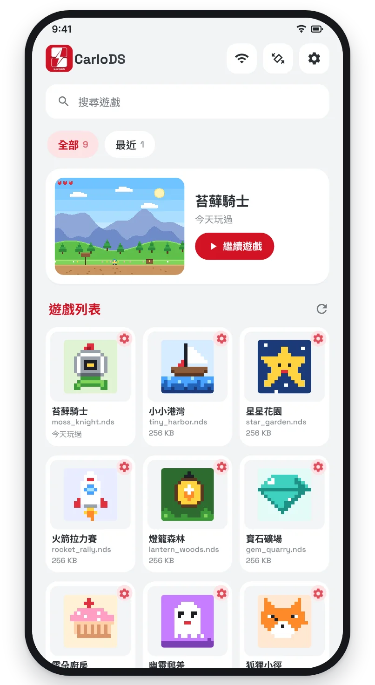
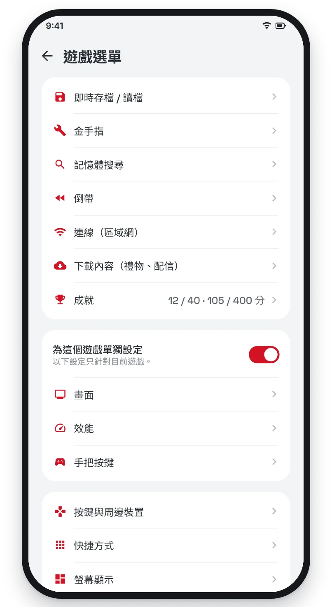
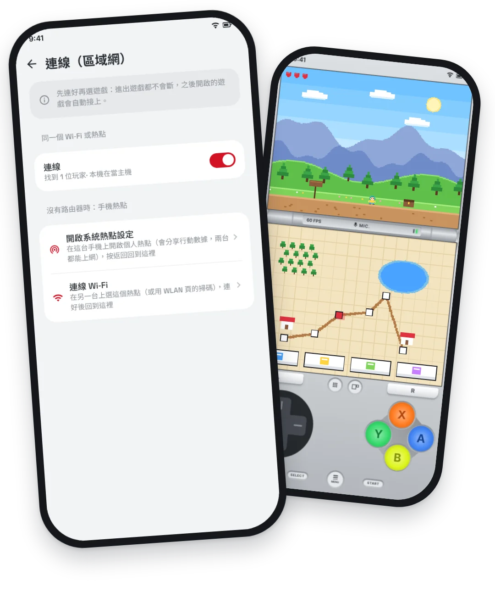
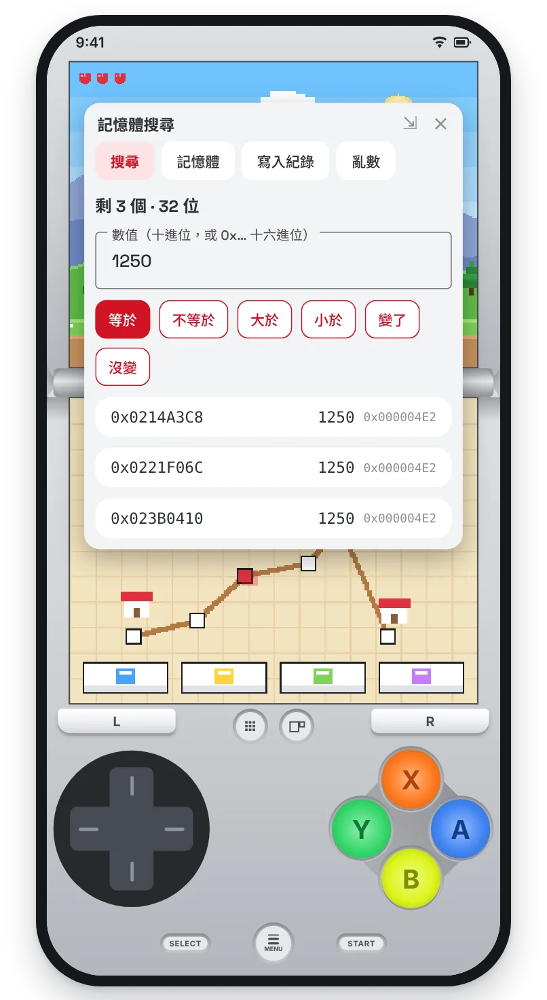
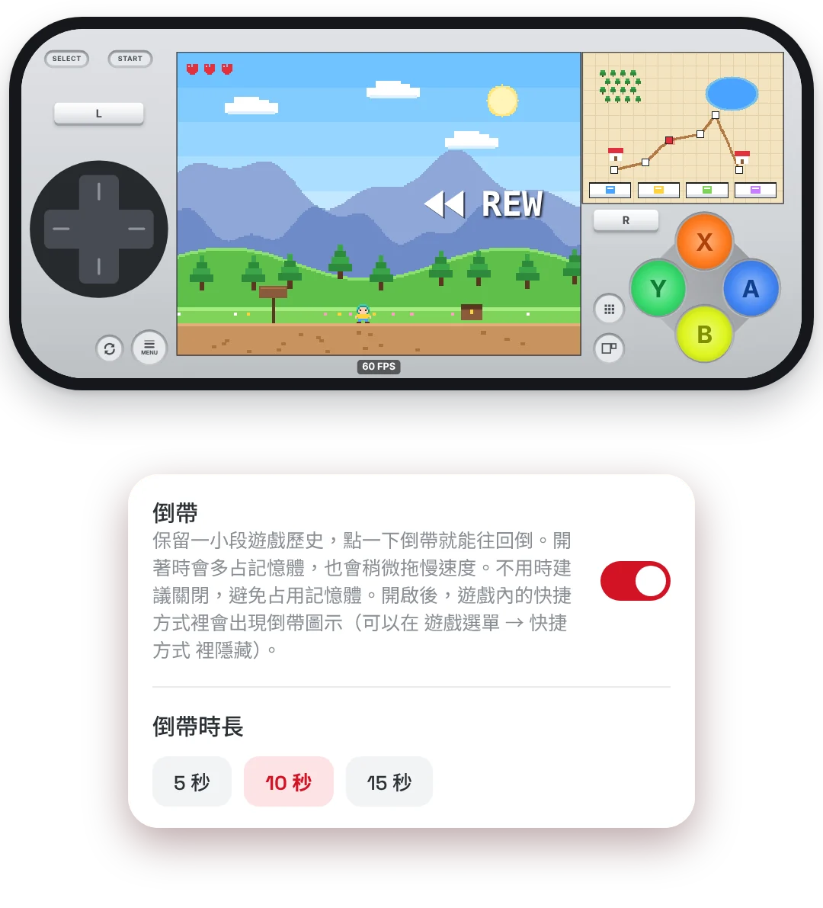

Android NDS 模擬器：自主研發高精度核心，支援高畫質 3D、本地連線、金手指與即時存檔。

自動讀出每款遊戲的圖示和名稱，接著上次繼續玩

CarloDS 是一款適用於 Android 手機與平板的 NDS 模擬器。其模擬核心完全自主研發，涵蓋 ARM9 與 ARM7 處理器、2D 與 3D 圖形、音訊、無線通訊及內建 BIOS，並依據大量實機測試結果逐項校準時序與畫面，力求重現原機表現。多數遊戲無需 BIOS 檔案即可執行，並支援 ZIP 格式。
直向、一大一小、左右並排、單螢幕，一鍵切換

低階、中階、高階一鍵切換，3D 最高 4 倍清晰

即時存檔、金手指、倒帶、連線、下載內容、成就

沒有路由器？開個手機熱點也能連

在浮動視窗裡搜數值，遊戲照常執行

點一下倒回 5 / 10 / 15 秒，從那一刻接著玩
